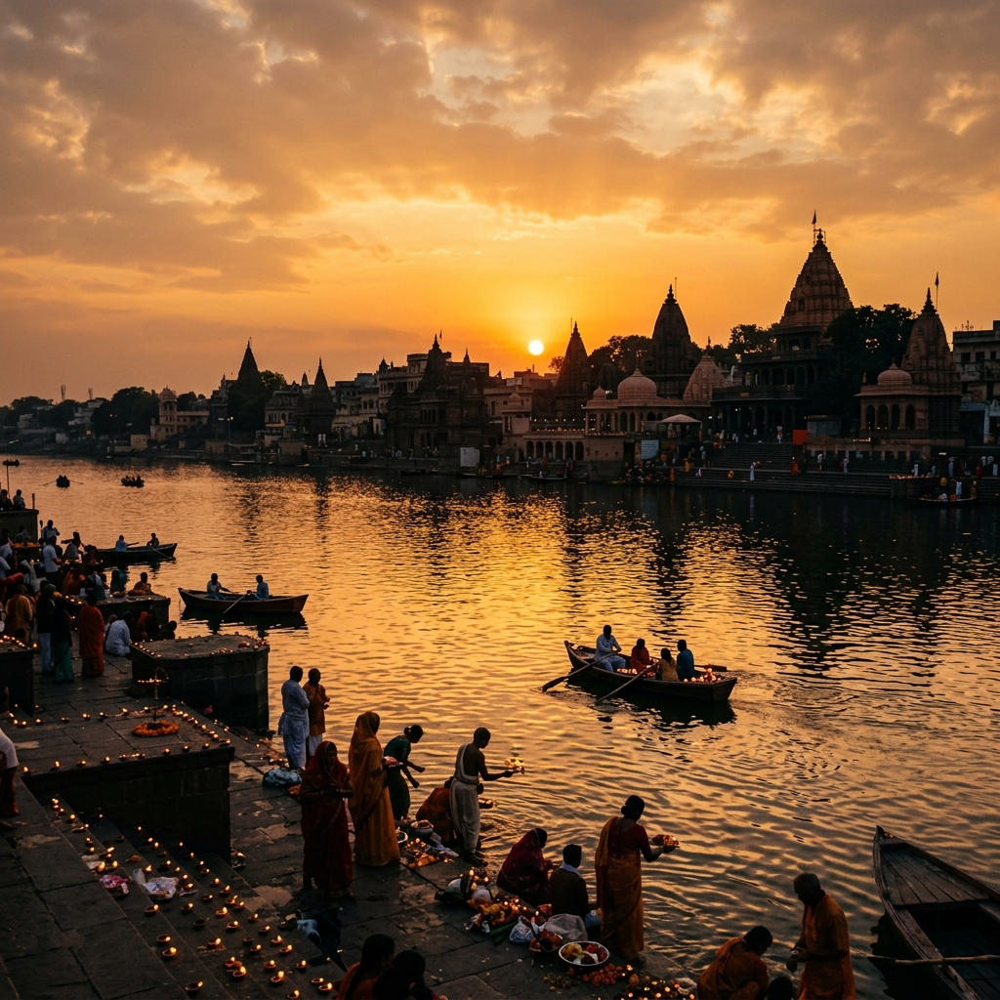

The Spiritual Significance of Ujjain
Discover why Ujjain is considered the navel of the earth and the city of Mahakal. Learn about the ancient connections of this sacred land.
Read Full Article
Wisdom & Stories of Ujjain

Discover why Ujjain is considered the navel of the earth and the city of Mahakal. Learn about the ancient connections of this sacred land.
Read Full Article
What exactly is Kaal Sarp Dosh according to Vedic astrology, and how does proper puja at Mahakaleshwar bring relief from its effects?
Read Full Article
Ancient scriptures emphasize the protection of cows as the highest form of dharma. Explore the spiritual benefits of adopting and feeding cows.
Read Full Article